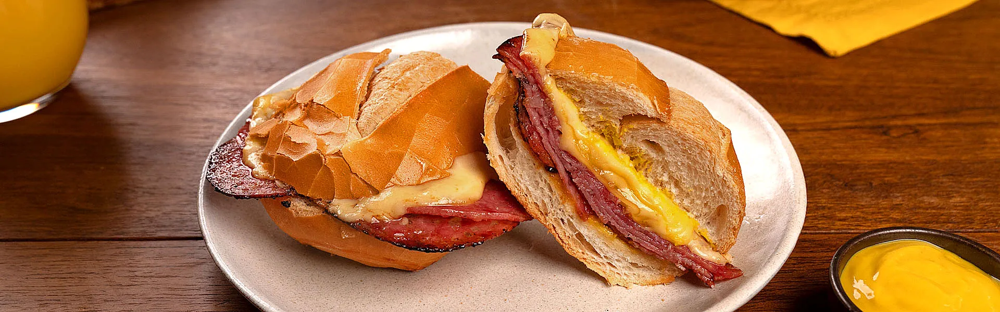
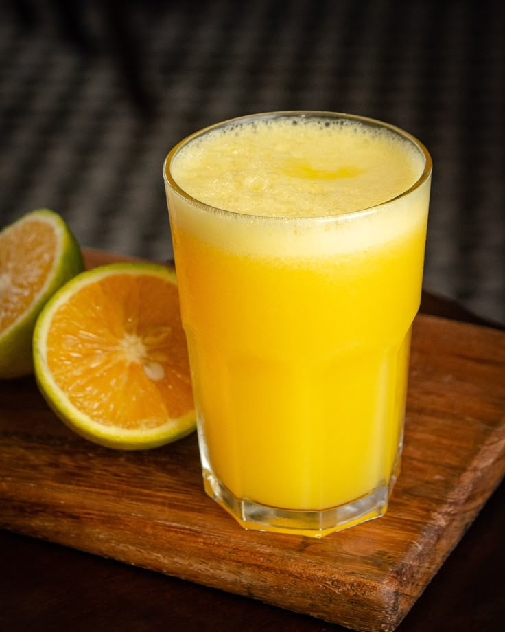

Cardápio da Lanchonete.
Veja abaixo alguns dos nossos itens mais pedidos do cardápio:
X-Burguer Simples:
Pão, hambúrguer artesanal e queijo.
Cachorro-Quente Tradicional:
Pão, salsicha, molho e batata palha.
Misto Quente de salame :
Pão, queijo,salame e Mostarda amarela.
Saiba mais sobre o prato aqui!Coxinha de Frango:
Massa crocante recheada com frango desfiado.
Suco Natural de Laranja:
Refrescante e feito na hora.
Saiba mais sobre o prato aqui!